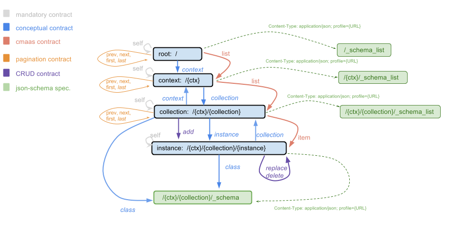

The image below depicts the map of hypermedia resources supported by Brainiak API.
In our API, successful responses have a links section that state possible actions for the resource being retrieved or access to other resources. For more about this concept, see Concepts and Hypermedia Support.
For example:
{
"links": [
{
"href": "http://brainiak.semantica.dev.globoi.com/person/Gender/Male",
"rel": "self"
},
{
href: "http://brainiak.semantica.dev.globoi.com/person/Gender",
method: "GET",
rel: "inCollection"
},
{
"href": "http://brainiak.semantica.dev.globoi.com/person/Gender/Male",
"method": "PUT",
"schema": {"$ref": "http://brainiak.semantica.dev.globoi.com/person/Gender/_schema"}
"rel": "update"
},
{
"href": "http://brainiak.semantica.dev.globoi.com/person/Gender/Male",
"method": "DELETE",
"rel": "delete"
}
]
}
The URLs in href can be exact URLs or templates described by URI template. When they are templates, each placeholder variable of the template should have the respective variable defined in each entry of the items section. For example:
{ "items": [
{
"title": "Europa",
"instance_prefix": "http://semantica.globo.com/place/Continent/",
"@id": "http://semantica.globo.com/place/Continent/Europe",
"resource_id": "Europe"
}
],
"links": [
{
"href": "http://brainiak.semantica.dev.globoi.com/place/Continent/{resource_id}?instance_prefix={instance_prefix}",
"method": "GET",
"rel": "item"
}
]
}
In the description below we use the term target to designate the resource retrieved that owns the link relations. Unless specified otherwise, GET is the default HTTP method used in each of the link relations.
Defined by the rel key, the possible link relations are grouped in logically related links. We call this groups contracts.
The mandatory contract is a group of links that need to be present in every response.
The target resource URL itself, i.e. a URL to the target resource that owns the links.
The CRUD contract is a group of links that represent the four basic data manipulation operations.
Refers to a resource that can be used to create other resources of the same type as the target.
Refers to a resource that can be used to edit the target by entirely redefining its content. When using update, the target will be removed and inserted again.
Method: PUT
More about the difference between HTTP PUT and PATCH.
Refers to a resource providing information about the target’s type in json-schema notation.
The Conceptual contract is a group of links that represent the specific concepts provided by the Brainiak API.
The root link refers to the starting point of hypernavigation in the Brainiak API. The current implementation has chosen to represent a list of contexts in the root.
The context link refers to some context. This concept is explained in Context. Each context is a namespace that holds a list of collections.
The collection link refers to some collection. This concept is explained in Collection. The collection is a list of instances that share the same type.
The CMAaS contract is a group of links that adhere to the Globo.com generic CMAaS or Content Management Application as a Service.
When the target is a list, the item refers to each resource within that list. Moreover, these items are guaranteed not to be lists.
When the target is a list, the instances refers to each resource within that list that represents a sub-list. Moreover, these resources are guaranteed to be also lists.
The Pagination contract is a group of links that support the basic primitives to navigate through items organized in pages.
Refers to the first page of a list.
Refers to the last page of a list. This link is only present if the respective resource URL receives the do_item_count parameter set to 1.
Refers to the previous page in a list.
Refers to the next page in a list.
Warning
By default, the item_count attribute of a list is not computed. As a result, the URL given by the next link may not contain data beyond the last page.